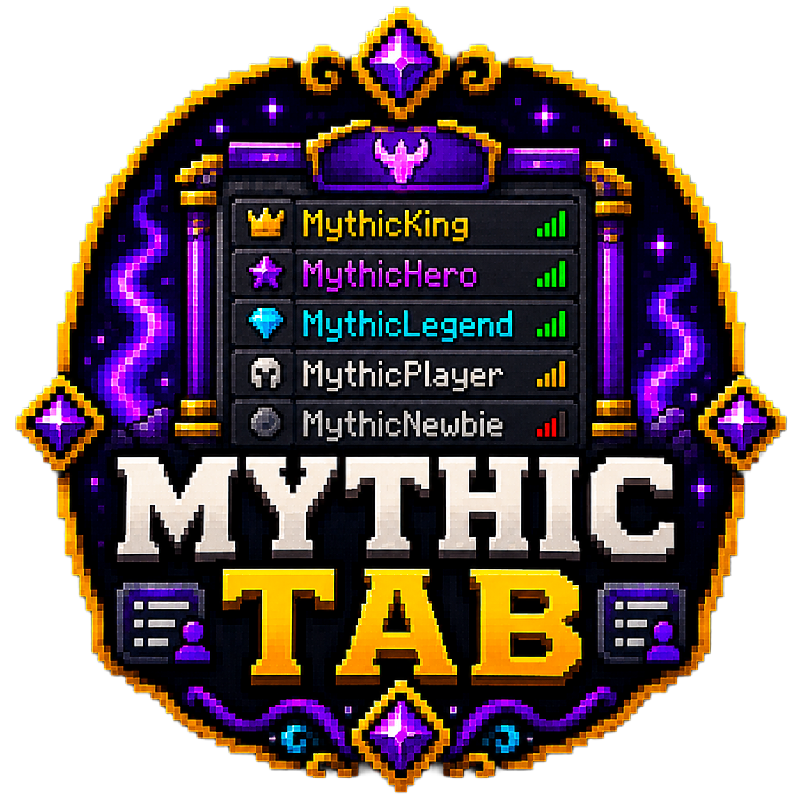

me.Ghoul.MythicTab.Main
Server Exclusive
MythicTab
Rank-aware custom tablist with PlaceholderAPI, Vault and GroupManager support.
—Spigot downloads
—Modrinth downloads
Private buildRelease status
PrivateCurrent version
Paper/Spigot 1.18+Compatibility
Full overview
A custom tablist with rank-aware ordering, header/footer design and placeholder-driven formatting.
MythicTab gives the server tablist the same level of polish as the rest of the network. Instead of a static player list, it becomes a branded panel that can communicate rank, level and server information at a glance.
It is especially useful on RPG or community servers where group identity matters and PlaceholderAPI data should be visible directly in the tablist.
Best suited toServers that want a polished tablist with rank identity and live placeholder-driven data.
How it works
Sort players, format groups and present live server information
The configuration defines rank order, header and footer lines, fallback colours and optional formatting overrides for each known group. MythicTab then updates the tablist every configured interval.
Custom placeholders can be inserted into names, headers and footers. This makes it easy to show online counts, ping, rank, LevelCraft totals or other data already exposed through PlaceholderAPI.
- Much cleaner first impression for players
- Does not rely on scoreboard teams for ordering
- Works with popular server management plugins
- Fully configurable tab branding
Key features
What this plugin focuses on
- Custom header and footer — Design the top and bottom of the tablist with branded multi-line text.
- Rank-based tab sorting — Define the exact order groups should appear in the tab list.
- Group formatting overrides — Apply display names, colours and prefixes independently of raw permission plugin prefixes.
- PlaceholderAPI support — Use third-party placeholders inside headers, footers and tab names.
- Vault and GroupManager integration — Pull primary group, prefix and suffix information from common server plugins.
- LevelCraft placeholder compatibility — Display RPG data such as total level when LevelCraft and PlaceholderAPI are installed.
This private build is tuned around GroupManager and Vault workflows. Placeholder-enabled servers can expose far more live information without changing the codebase.
Setup guide
Recommended starting checklist
- Install MythicTab alongside Vault and GroupManager for the best results.
- Optionally install PlaceholderAPI and LevelCraft for extended placeholders.
- Set rank order, group formatting and header/footer lines in config.yml.
- Use /mythictab reload after editing.
Source-grounded documentation
Technical reference from the supplied project
This reference is written into the page as static HTML from the uploaded source project. It does not rely on automatic browser-generated documentation.
✓
Source verifiedMythicTab · 1 Java classes
Commands
Command reference
Declared directly in plugin.yml.
| Command | Purpose | Usage | Aliases | Permission |
|---|---|---|---|---|
/mythictab | MythicTab admin command | /mythictab reload | /mtab, /tab | None declared |
Permissions
Permission reference
Defaults and descriptions are taken from the supplied plugin descriptor.
| Permission | Description | Default |
|---|---|---|
mythictab.admin | Allows access to MythicTab admin commands | op |
Configuration
Bundled configuration files
Expand a file to inspect detected configuration paths. Repeated list entries are intentionally condensed.
config.yml20 detected key paths
EnabledUpdate-SecondsSortingSorting.EnabledSorting.Rank-OrderGroup-FormattingGroup-Formatting.EnabledGroup-Formatting.Default-ColorGroup-Formatting.Default-Name-ColorGroup-Formatting.Default-PrefixGroup-Formatting.GroupsGroup-Formatting.Groups.OwnerGroup-Formatting.Groups.AdminGroup-Formatting.Groups.ModGroup-Formatting.Groups.VIPGroup-Formatting.Groups.MemberGroup-Formatting.Groups.DefaultHeaderFooterTab-Name
Tokens & placeholders
Detected substitution tokens
Literal tokens found in source files and bundled configuration.
%levelcraft_total_level%{6}{displayname}{group_color}{group}{max_players}{online}{ping}{player}{prefix}{suffix}{tab_name_color}{tab_prefix}{tab_rank}{world}
These are literal tokens found in the supplied source and bundled YAML files. Some are message-command substitutions rather than PlaceholderAPI identifiers.
Architecture
Source organisation
A concise map of the supplied implementation, useful for administrators and developers evaluating the project.
Packages
me.Ghoul.MythicTab1 classes
Key implementation classes
Main
API and integration classes
No dedicated API, hook, provider or expansion classes were detected by name.